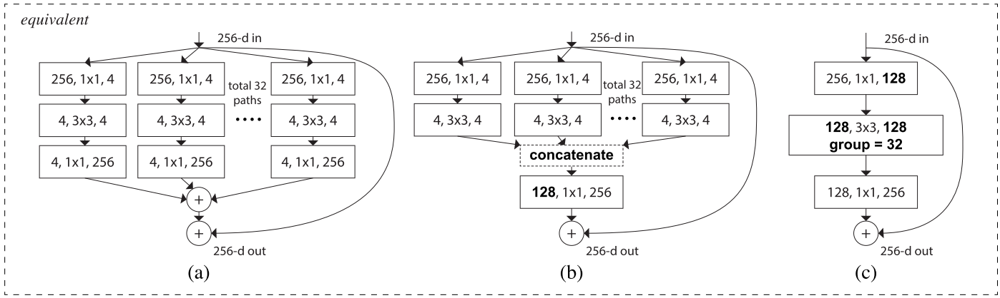
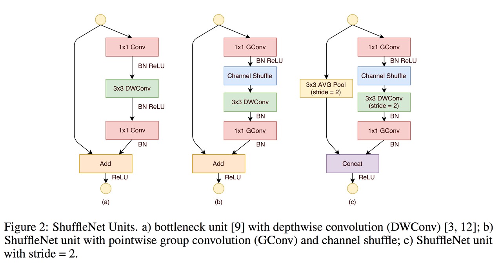

Different types of the convolution layers
If you are looking for explanation what convolution layers are, it better to check Convolutional Layers page
Contents
Simple Convolution
Take multiply dot products with same filter with some width/height shift. Interesting because:
- Weights sharing
- Translation invariant

1x1 Convolutions
Initially 1x1 convolutions were proposed at Network-in-network(NiN). After they were highly used in GoogleNet architecture. Main features of such layers:
- Reduce or increase dimensionality
- Apply nonlinearity again after convolution
- Can be considered as “feature pooling”
They are used in such way: we have image with size 32x32x100, where 100 means features, and after applying 20 1x1 convolutions filters we will get images with 32x32x20 dimensions.

Flattened Convolutions
Were published in Flattened Convolutional Neural Networks for Feedforward Acceleration. Reason of usage same as 1x1 convs from NiN networks, but now not only features dimension set to 1, but also one of another dimensions: width or height.
Spatial and Cross-Channel convolutions
First this approach was widely used in Inception network. Main reason is to split operations for cross-channel correlations and at spatial correlations into a series of independently operations. Spatial convolutions means convolutions performed in spatial dimensions - width and height.

Depthwise Separable Convolutions
A lot about such convolutions published in the (Xception paper) or (MobileNet paper). Consist of:
- Depthwise convolution, i.e. a spatial convolution performed independently over each channel of an input.
- Pointwise convolution, i.e. a 1x1 convolution, projecting the channels output by the depthwise convolution onto a new channel space.
Difference between Inception module and separable convolutions:
- Separable convolutions perform first channel-wise spatial convolution and then perform 1x1 convolution, whereas Inception performs the 1x1 convolution first.
- depthwise separable convolutions are usually implemented without non-linearities.
Grouped Convolutions
Grouped convolutions were initial mentioned in AlexNet, and later reused in ResNeXt. Main motivation of such convolutions is to reduce computational complexity while dividing features on groups.
Shuffled Grouped Convolutions
Shuffle Net proposed how to eliminate main side effect of the grouped convolutions that “outputs from a certain channel are only derived from a small fraction of input channels”.
They proposed shuffle channels in such way(layer with \(g\) groups whose output has \(g \times n\) channels):
- reshape the output channel dimension into \((g, n)\)
- transpose output
- flatten output back
So at the end in paper was proposed to use such convolutions for 1x1 convolutions to reduce computation costs. Notice, that 3x3 convolutions still usual depthwise approach and last operation was changed from Add to Concat.
